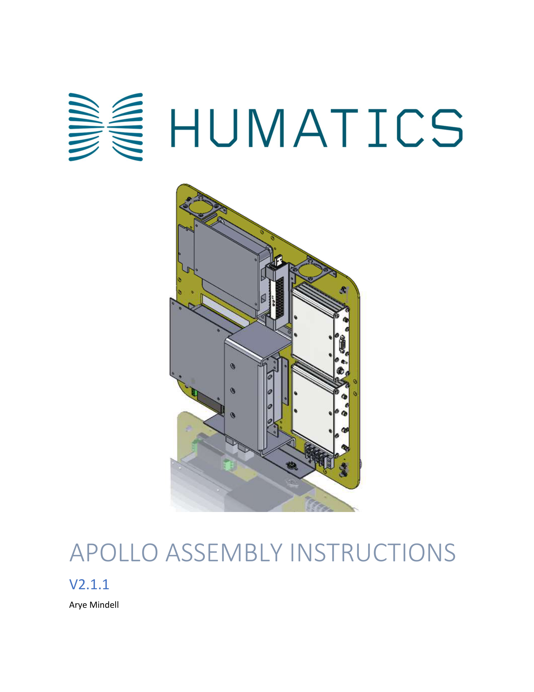
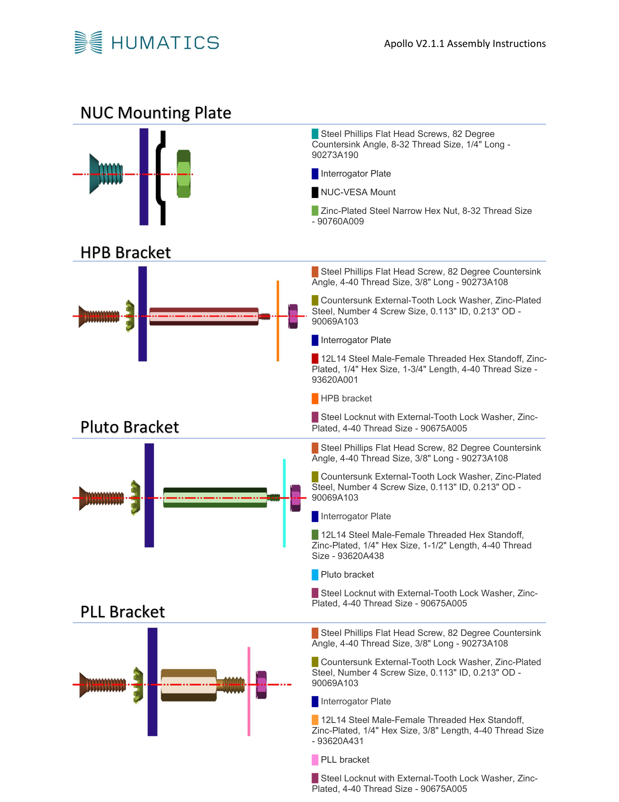

Overview
Authored the production assembly manual (V2.1.1) and assembled commercial Humatics Apollo ultra-wideband positioning units during an internship at Humatics Inc. The Apollo delivers centimeter-level precision for industrial tracking and autonomous navigation. I created the CAD-illustrated, step-by-step procedures the production team uses to build every unit that ships.
Apollo Assembly & Documentation
Built Apollo units from bare PCBs to finished product, then distilled that hands-on knowledge into the official assembly document:

Apollo Assembly Instructions cover — CAD exploded view of the UWB positioning unit

Assembly step details — bracket mounting procedures with color-coded fastener diagrams
Key Takeaways
- Production-grade documentation: Wrote the assembly manual that shipped with the product — clear enough for any technician to follow, precise enough for QA sign-off.
- UWB system fundamentals: Gained working knowledge of ultra-wideband time-of-flight ranging, antenna placement, and calibration requirements.
- Hardware QA: Learned to identify solder defects, connector misalignment, and EMI issues during assembly and functional testing.